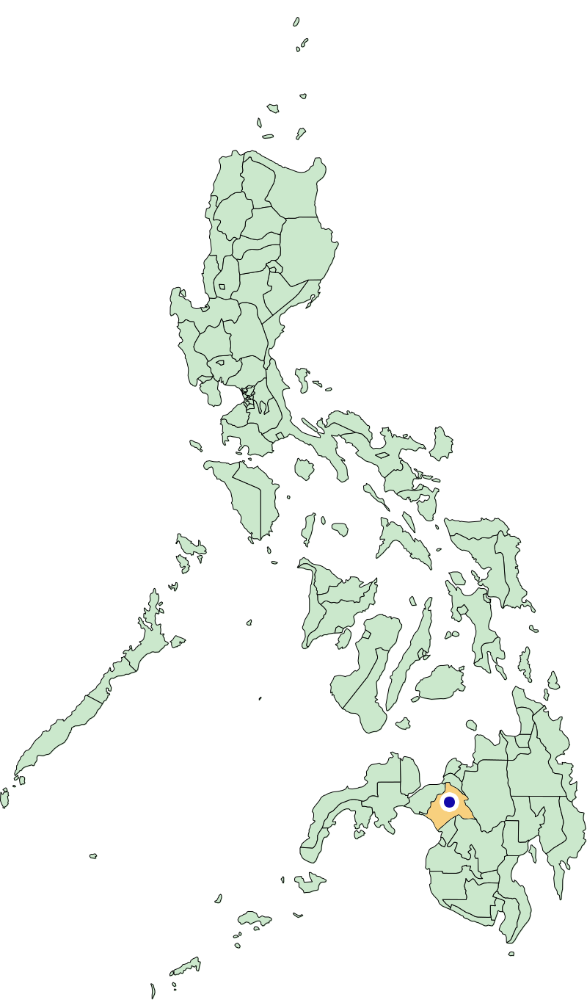
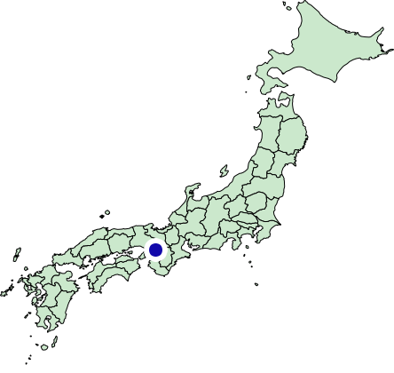

Southeast Asia is home to a musical tradition which spans islands and eras, a family of related instruments known as gong-chimes. Examples include the Javanese gamelan, the Balinese reyong, and, among the southern islands of the Philippines, the kulintang. A kulintang consists of a set of seven to twelve high-rimmed bronze gongs of decreasing size resting on horizontally stretched ropes in a low wooden frame, an arrangement which allows them to resonate freely. The gongs are "bossed," having a raised knob in the center rather than flat, and the seated performer strikes each boss with wooden sticks to produce a note.
Along with xylophones, bells, cymbals, triangles, and the like, the kulintang is classified as an idiophone: instruments which “sound by themselves,” vibrating their entire body to create sound (Schneider 496). The kulintang is most often played in an ensemble rather than alone, although the configuration of gongs and accompanying instruments varies.
When played by the Maguindanao (a particular ethnic group, the "people of the flood plain") (Cadar 235), the kulintang holds eight gongs of eight descending pitches, and four other instruments join its ensemble: three types of hanging gongs (gandingan, agung, and babandil), and a lizard-skin drum, the dabakan (Kalanduyan 3). The babandil is a high-pitched timekeeper, keeping the rest of the ensemble on beat. In contrast, the large, low-pitched pair of agung set more complex rhythms for the piece alongside the dabakan. The gandingan is a set of four gongs which provide a counterpoint to the kulintang, the main melody.
In contrast with Western musical traditions, the kulintang values rhythm and improvisation over exact melody. There is no standardized tuning between instruments, and "almost as many scales exist as there are ensembles" (Maceda). In keeping with this highly individualized tradition, songs were originally passed directly from teacher to student, with no written notation, although some systems have been developed in the modern day (Jiménez). This move coincides with the kulintang's gradual spread to a wider audience.
In the Philippines themselves, the kulintang-playing Maguindanao and their fellow Islamic ethnic groups (collectively, the Moros) are a minority in a primarily Christian nation. However, among the descendants of the Filipino diaspora in the United States and the rest of North America, Islamic or not, the kulintang has been increasing in popularity since its introduction in the 1960s (Terada 81).
The kulintang tradition is perceived as uniquely Filipino, in contrast to forms like the rondalla, a plucked string ensemble brought to the islands by Spanish colonizers (Trimillos 11).
The instrument might well have remained completely obscure if not for a handful of specific catalysts. In 1968, on behalf of the University of Washington’s ethnomusicology department, professor Robert Garfias invited prominent Filipino musician Usopay Cadar to Seattle (Terada 86).

Usopay Cadar grew up in Taraka, in the province of Lanao del Sur. In Seattle, he earned a PhD in ethnomusicology and began teaching courses in kulintang music to the local community.
In 1976, Garfias invited a second artist to the University of Seattle: Danongan "Danny" Kalanduyan. After earning his MA in ethnomusicology, he joined Cadar in teaching kulintang music, and became exceedingly prolific, as related by Pamela Costes-Onishi: “All other Filipino-American kulintang performers will mention their association with Danny or guro (teacher), as he is fondly called by those who know him. In a lot of ways, performing kulintang in the United States will need a stamp of Danny’s name to earn credibility and legitimacy” (Costes-Onishi 115).
From his hometown of Datu Piang, a young Kalanduyan won island-wide competitions as a gandingan player. In 1995, the National Endowment for the Arts awarded him a National Heritage Fellowship, a recognition of his contributions to traditional music in the United States.
Those taught directly by these two masters furthered the study and practice of the instrument in all directions. Yoshitaka Terada, who studied under both men, wrote an analysis of the gandingan as his master's thesis. After earning his PhD at the University of Washington, he is currently a professor in Anthropology at the National Museum of Ethnology in Osaka, Japan.

Ensembles such as the World Kulintang Ensemble and the Pakaraguian Kulintang Ensemble continue to play across the United States. Kalanduyan's legacy is still felt - the Pakaraguian Kulintang Ensemble boasts "some members have been formally trained by kulintang master musicians, such as Danongan Kalanduyan."
Roughly a third of the Filipino-Canadian population lives in and around Toronto. DATU; Pantayo
As the instrument disseminated into new populations, changes inevitably arose. Yoshitaka Terada points out that Filipino communities in urban areas tend towards close proximity with other minorities, including African-Americans, leading to the absorption of genres like jazz, blues, soul, R&B, and rap (Terada 83). Kulintang’s improvisational nature meshes well with jazz sensibilities, providing an easy avenue for learners already familiar with that type of music (Terada 88).
Certain artists mix their kulintang style with contemporary genres, creating fusions like Susie Ibarra's "Filipino trip-hop." Ibarra, a Filipino-American jazz percussionist, took lessons from Kalanduyan in the 1990s and began incorporating kulintang melodies and sensibilities into her music, synthesizing her heritage with her existing talents (Talusan).
Ron Quesada, a San Fransisco-based guitar and bass player before studying kulintang under (who else) Danongan Kalanduyan, refers to his music as "kulintronica." His repeatedly stated mission is "to make kulintang a house-hold name" through fusion with modern dance music. (Flashing lights warning).
Balmes, Christine, et al. “Sonic Collectivities and the Musical Routes of Pantayo.” Diasporic Intimacies: Queer Filipinos and Canadian Imaginaries, edited by Robert Diaz et al., Northwestern University Press, Evanston, Illinois, 2018, pp. 135–145. JSTOR, Link.
Jiménez, Isaac Donoso. “Historiography of the Moro Kulintang.” TRANS, Revista Transcultural De Música, 2008, Link.
Kalanduyan, Danongan S. “Magindanaon Kulintang Music: Instruments, Repertoire, Performance Contexts, and Social Functions.” Asian Music, vol. 27, no. 2, 1996, pp. 3–18. JSTOR, Link.
Maceda, José. "Kulintang." Grove Music Online. January 01, 2001. Oxford University Press, Link.
Schneider, Albrecht. “Sound, Pitch, and Scale: From ‘Tone Measurements’ to Sonological Analysis in Ethnomusicology.” Ethnomusicology, vol. 45, no. 3, 2001, pp. 489–519. JSTOR, Link.
Talusan, Mary. "Kalanduyan, Danongan." Grove Music Online. September 22, 2015. Oxford University Press, Link.
Talusan, Mary. "Ibarra, Susie." Grove Music Online. May 28, 2015. Oxford University Press, Link.
Terada, Yoshitaka. “Kulintang Music and Filipino American Identity.” Music and Minorities in Ethnomusicology: Challenges and Discourses from Three Continents, ed. Ursula Hemetek. 2012. Link.
Trimillos, Ricardo D. “Music and Ethnic Identity: Strategies among Overseas Filipino Youth.” Yearbook for Traditional Music, vol. 18, 1986, pp. 9–20. JSTOR, Link.
Usopay H. Cadar. “The Role of Kulintang Music in Maranao Society.” Ethnomusicology, vol. 17, no. 2, 1973, pp. 234–249. JSTOR, Link.